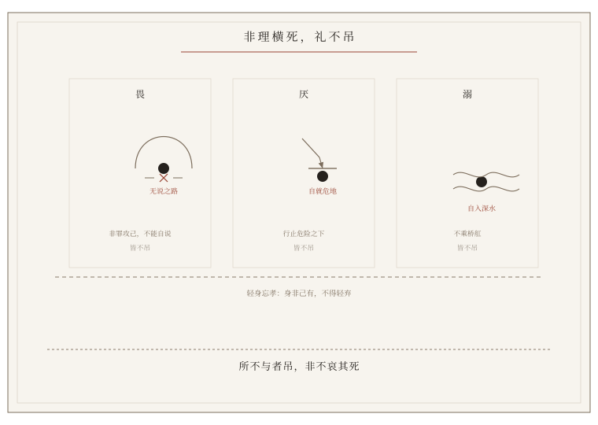

檀弓上 · 三·二十四 · 第 227 课
死而不吊者三：畏、厌、溺。注「谓轻身忘孝也。畏，人或时以非罪攻己，不能有以说之死之者，孔子畏于匡。厌，行止危险之下。溺，不乘桥舡」。
说什么事：三种死，礼不予吊。
落在哪一层：礼，兼及礼意与边界。论哀之所不当加。
为何编在此位：上节讥其早，此节断其不与。礼之严处，至此一露。
【经】死而不弔者三：畏、厭、溺。
【注】谓輕身忘孝也。畏，人或時以非罪攻己，不能有以說之死之者，孔子畏於匡。厭，行止危險之下。溺，不乘橋舡。
【疏】此一节论非理横死不合吊哭之事。「畏」谓有人以非罪攻己，己若不有以解说之而死者，则不吊；郑注引《论语》以证之，明须解说也。案《世家》云，阳虎尝侵暴于匡，时又孔子弟子颜刻为阳虎御车；后孔子亦使刻御车，从匡过，孔子与阳虎相似，故匡人谓孔子为阳虎，因围，欲杀之；孔子自说，故匡人解围也。自说者，谓卑辞逊礼；《论语注》云「微服而去」，谓身著微服潜行而去，不敢与匡人斗，以媚悦之也。「厌」谓行止危险之下，为崩坠所厌杀也。「溺」谓不乘桥舡而入水死者，何胤云「冯河、潜泳，不为吊也」。除此三事之外，其有死不得礼亦不吊，故昭二十年卫齐豹欲攻孟絷，宗鲁事孟絷，许齐豹攻之而不告孟絷，及孟絷被杀而死，宗鲁亦死之，孔子弟子琴张欲往吊之，孔子止之曰「齐豹之盗，而孟絷之贼，女何吊焉」，杜预云「言齐豹所以为盗、孟絷所以见贼，皆由宗鲁」，是失礼者亦不吊也。
吊 往哭其丧、致其哀。
畏 注「人或时以非罪攻己，不能有以说之死之者」。被人以非罪相加而不能自解，遂死。
厌 注「行止危险之下」。为崩坠所压。
溺 注「不乘桥舡」。不由桥船而入水。
桥舡 桥与船。舡，船之异体。
死了而不加吊问的，有三种：畏、厌、溺。
此节仅六个字，注一句「轻身忘孝」，把三种死归到一个根上：都不是不得不死，而是把自己置于死地。礼之不吊，不是不哀其死，是不与其死法。最重的一层在「畏」：被非罪相加而死者仍不吊，因为本可以说、可以走，而他没有。
第一层 三死之同 畏、厌、溺，三种死法看似无关：一是被攻，一是被压，一是入水。注以「轻身忘孝」四字贯之。轻身者，不以身为重；忘孝者，忘了此身是父母之身。此四字，是全部礼义的支点。
第二层 畏之辨最细 注「不能有以说之死之者」——若能有以自解而不死，则不当死；死了便不吊。疏引《世家》匡人之围，孔子自说而解，又引《论语注》「微服而去」。可见「畏」之罪，不在被攻，在「不自解」。能说而不说，能走而不走，其死便由己。
第三层 厌与溺 厌是「行止危险之下」，自就危地；溺是「不乘桥舡」，自入深水。两者皆是自己走到那一步。何胤一句「冯河、潜泳，不为吊也」，说得极直：逞能者死，礼不为之哀。
第四层 失礼者亦不吊 疏补一条：昭二十年齐豹攻孟絷，宗鲁许其事而不告，及孟絷死，宗鲁亦死，琴张欲吊，孔子止之，曰「齐豹之盗，而孟絷之贼，女何吊焉」。此条把「不吊」从死法扩到「死之由」：死于不义之事者，亦不当吊。
与今日何干 凡有意外之死，人常一律致哀。此节立一个不近人情的界：有些人把自己送到死地，其死不当得同等的哀。此说今天听来太严，但它守的是一条底线——身非己有，不得轻弃。
| 左 | 右 |
|---|---|
| 死而不吊者三 | 礼不予吊，非不哀 |
| 畏 | 以非罪攻己，不能自说而死 |
| 厌 | 行止危险之下，为崩坠所压 |
| 溺 | 不乘桥舡而入水 |
| 轻身忘孝 | 三事同一根 |
| 孔子畏于匡而自说 | 能说则不当死 |
| 宗鲁死孟絷之难 | 失礼者亦不吊 |
画三处并列的小景，自左至右，以浅色竖线相隔。左景：一段土墙围成的窄巷，巷中地上画一个人的影子（无实体人物），墙头两人持械朝下，巷口有一条可走的空隙。中景：一处崖下的窄道，崖上悬着一块裂石，石下地面有压痕。右景：一条河，河上有桥也有船，岸边水中一片深色涟漪，桥上、船上都空着。三景地面上各无尸、无血。不写文字、不画人面。赭色只用在左景巷口那条空隙与右景桥栏的一根横木上。
